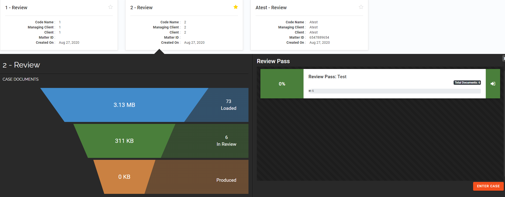

To select a case and review pass in the Review &Transcripts module of
Click Review &Transcripts
on the
Click the case’s card. Cases are displayed alphabetically. The cases that display are controlled by a user's permissions. Inactive case cards are muted gray and are grouped alphabetically after the active case cards.
Under Recent in the left pane, select the case. The Recent list displays the last five accessed cases. Note: If the status for a case is changed to inactive or user permissions for the case are removed, it is automatically removed from the Recent Case list.
Under Favorites in the left pane, select the case. The list is sorted chronologically; displaying the most recently accessed cases at the beginning of the list.
Enter the case or client name in the Search field. Cases under Favorites and Recent are not impacted by the search function to filter cases.
The Funnel graph and Review Passes display for the selected case.

The Funnel graph depicts the number of case documents that are loaded, in review, and produced. Each Review Pass depicts the percentage of documents reviewed, a progress bar, the review pass name, and the total number of documents.
Note: To close the funnel graph, click in the upper right corner.
Next, do one of the following: